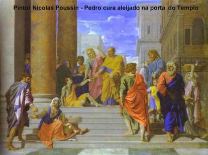
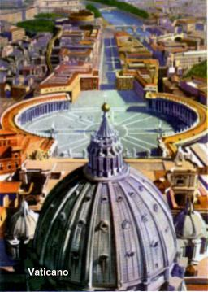
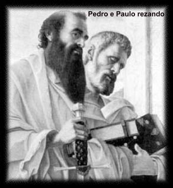

ESCOLHA
DE MATIAS
Naqueles dias, Pedro falou a assembléia
de cristãos reunidos:
"Irmãos, era preciso
que se realizasse o que na Escritura, pela boca de Davi, o ESPÍRITO SANTO
predisse a respeito de Judas Iscariotes, que traiu JESUS. Vivia
entre nós e era contado como um dos nossos. Tendo adquirido um terreno com
as 30 moedas de prata do crime de sua traição, suicidou-se num galho de árvore.
O fato foi notório a todos os habitantes de Jerusalém. Em consequência o campo
foi denominado na língua deles: Haceldamá". (que
significa Campo de sangue)
Vivia
entre nós e era contado como um dos nossos. Tendo adquirido um terreno com
as 30 moedas de prata do crime de sua traição, suicidou-se num galho de árvore.
O fato foi notório a todos os habitantes de Jerusalém. Em consequência o campo
foi denominado na língua deles: Haceldamá". (que
significa Campo de sangue)
Está escrito no Livro dos
Salmos: "Um outro receba o seu cargo."
Apresentaram dois homens:
José, chamado Barsabás e cognominado o Justo, e Matias. Então, fizeram esta oração:
"SENHOR, tu que conheces o coração de todos,
mostra qual destes dois escolhestes para ocupar, neste ministério do apostolado, o posto
que abandonou Judas, para ir a seu lugar." (At 1,15-25)
Foi lançada a sorte entre os dois, e no sorteio foi
escolhido Matias, que logo foi integrado ao Colégio Apostólico, sendo o décimo segundo
Apóstolo.
PENTECOSTES
Cinquenta dias após a Ressurreição do SENHOR,
no dia de Pentecostes, estavam os Apóstolos e NOSSA SENHORA reunidos no
Cenáculo em Jerusalém, no andar superior daquele sobrado onde fizeram a Última
Ceia, quando de repente, veio do Céu um ruído semelhante ao soprar de impetuoso
vendaval, e encheu toda a sala onde se encontravam. E apareceram umas como línguas
de fogo, que se distribuíram e foram pousar sobre cada um deles. Todos ficaram
cheios do ESPÍRITO SANTO e começaram a falar em outras línguas, conforme
o ESPÍRITO os impelia. Estavam em Jerusalém pessoas piedosas de muitas
nações. Ao se produzir o ruído do vendaval, a multidão se reuniu defronte
a casa e ficou confusa, pois cada qual ouvia os Apóstolos em seu próprio
idioma. Surpresos e admirados diziam:
"Não são todos galileus (os galileus eram considerados
pessoas rudes de pouca instrução)
esses que falam? Como é que cada um de nós os ouve no
próprio idioma?" (At 2,7-8)
Pedro, de pé com os Onze Apóstolos, falou
ao povo anunciando a realização da profecia de Joel (Jl 3,1-5) e com toda eloquência
lembrou-lhes a vinda de JESUS, o Messias, a sua grandiosa obra com milagres,
prodígios e sinais provando que ELE estava com DEUS, que as obras que ELE fazia
era pela Vontade do CRIADOR, objetivando a salvação de toda humanidade. Mesmo
assim, o SENHOR não foi compreendido: foi preso, condenado, flagelado e morto
numa Cruz, como o mais desprezível de todos os bandidos. DEUS, porém, o
ressuscitou e agora, exaltado a direita do CRIADOR, recebeu do PAI ETERNO o
ESPÍRITO SANTO, objeto da promessa e enviou-nos o mesmo ESPÍRITO, que agora
derramou abundantes graças sobre nós. É isto o que vedes e ouvis. (At 2,1-41)
Ouvindo isto, sentiram o coração apertado de
angústia e transpassado por uma terrível dor de culpa e perguntaram a Pedro:
"O que devemos fazer?"
Simão Pedro respondeu-lhes: "Convertei-vos,
e seja cada um de vós batizado em nome de JESUS CRISTO, para a remissão dos
pecados, e recebereis então, o dom do ESPÍRITO SANTO."
E naquele dia foram batizadas aproximadamente três mil pessoas.
O ALEIJADO DE
NASCENÇA
Fundaram a primeira Comunidade Cristã.
Os fieis acompanhavam com interesse
os ensinamentos dos Apóstolos, à comunhão
fraterna, à fração do pão e ás orações. Eram unidos e tinham tudo em comum, vendiam
as suas propriedades e os seus bens, e colocavam o dinheiro nas mãos
dos Apóstolos que dividia segundo as necessidades de cada um.
Certo dia, Pedro e João subiram ao Templo para
a oração da tarde, quando presenciaram algumas pessoas carregando um aleijado de
nascença que era colocado diariamente à porta do Templo, chamada Porta Formosa.
O aleijado vendo Pedro e João entrarem, pediu-lhes uma esmola. Pedro o encarou e
disse: "Olha para nós".
Ele olhou esperando receber alguma coisa. Pedro falou: "Não tenho prata e nem ouro, mas o que tenho, isto te dou: Em Nome de
JESUS CRISTO NAZARENO, anda!" (At 3,3-6) E tomando-o
pela mão direita, ergueu-o. O homem ficou de pé e começou a andar! Gritou de alegria,
não cabia em si de tanto júbilo e andando, pulando, louvava a DEUS e todo o povo
viu e testemunhou o admirável milagre. As pessoas que observavam foram se
juntando a eles, e aquele que era aleijado, não se afastava dos dois Apóstolos,
abraçava-os e elogiava Pedro e João, convidando as pessoas a conhecê-los.
Pedro então, dirigiu-se ao povo e disse:
"Homens de Israel, porque
vos admirais disto? Ou porque não tirais os olhos de nós, como se fosse por nosso próprio
poder ou por nossa piedade que fizemos este homem andar?"
E fez um belo discurso explicando ao povo à vinda de
JESUS, o FILHO de DEUS e o Autor da Vida, que eles mesmos mataram numa Cruz. Mas
que DEUS o ressuscitou e ELE vive na glória do PAI ETERNO. E disse ainda: "Foi justamente a fé no nome de JESUS que fez este
homem caminhar, completamente curado." E continuando
a falar, disse:
"Entretanto, meus irmãos, eu
sei que agistes por ignorância, assim como vossos chefes. DEUS, porém , realizou deste
modo o que predissera pela boca de todos os profetas: que o seu CRISTO haveria
de sofrer. Arrependei-vos, pois, e convertei-vos, a fim de que os vossos pecados
sejam perdoados..." (At 3,17-19)
Ainda falava, quando vieram os sacerdotes
e os saduceus contrariados com aquela pregação e mandaram os guardas do Templo
prender os dois Apóstolos. No dia seguinte os levaram a presença do Grande
Conselho Judeu. Depois de acirradas discussões e da autêntica defesa que Pedro
fez iluminado pelo ESPÍRITO SANTO, eles não tiveram outra alternativa que
colocá-los em liberdade, uma vez que ali mesmo, bem na frente deles, estava o
homem que era aleijado de nascença e que todos conheciam, completamente
curado.
Saindo dali, os Apóstolos continuaram com muito
vigor, dando testemunho da Ressurreição de JESUS e da Obra grandiosa do FILHO
DE DEUS em favor da humanidade. O número de fieis aumentava cada vez mais
e eles viviam fraternalmente, sempre juntos e perseverando na oração.
GAMALIEL DEFENDE
OS APÓSTOLOS
O Sumo-Sacerdote Caifás, cheio de inveja com
o progresso dos cristãos, reuniu
os membros de seu partido, a seita dos
saduceus e decidiu mandar prender os Apóstolos e jogá-los na cadeia pública. Deu
ordem aos soldados, que foram e prenderam os Apóstolos e os jogaram na prisão.
Durante a noite, enquanto Pedro e os outros rezavam, o Anjo do SENHOR veio,
abriu as portas do cárcere e depois de conduzi-los para fora, falou: "Ide anunciar com destemor ao povo no Templo tudo
o que se refere a este Caminho". (Caminho, significa a
Mensagem de Salvação) (At 5,20) Os guardas apesar de se encontrarem
acordados em seus postos, não viram nada.
No dia seguinte, os homens do Sinédrio
mandaram buscar os prisioneiros e não encontraram ninguém, embora a prisão
estivesse cuidadosamente fechada com as sentinelas nas portas. Todavia, alguém
que havia passado no Templo, viu que os Discípulos de JESUS estavam lá ensinando
normalmente, como se nada tivesse acontecido. Mandaram buscá-los. No Sinédrio
as autoridades judaicas queriam acusar os Apóstolos de qualquer maneira.
Todavia, levantou-se um fariseu chamado Gamaliel, que era doutor da Lei e muito
respeitado pelo povo, moderadamente solicitou a atenção de todos para as suas
palavras. Mandou que os Apóstolos saíssem por um instante e discursou para os
membros do Sinédrio:
"Homens de Israel, vede bem
o que ides fazer a estes homens. Há algum tempo surgiu Teúdas, que afirmava ser
alguém, e aliciou mais ou menos quatrocentos homens. Foi morto e todos os que
o haviam seguido debandaram e foram reduzidos a nada. Depois dele, na época do
recenseamento, apareceu Judas, o Galileu, que sublevou muita gente em sua sequela.
Pereceu ele também, e os que se haviam aliado a ele foram dispersos. Agora,
portanto, eu vos digo, não vos ocupeis destes homens: deixai-os. Pois, se o seu
intento ou a sua obra provém de homens, destruir-se-á por si mesma; mas se, ao
invés, verdadeiramente vem de DEUS, não conseguireis arruiná-la. Não vos
exponhais ao risco de combater contra DEUS."
(At 5,34-39)
Eles aceitaram o parecer de Gamaliel
e colocaram os Apóstolos em liberdade, depois de castigá-los com açoite.
E todos os dias, no Templo, nas casas e
nas praças, os Discípulos do SENHOR não cessavam de ensinar e anunciar a boa
nova de CRISTO JESUS.
INSTITUIÇÃO
DOS DIÁCONOS

Como cresceu muito
o número de fieis, os Apóstolos reuniram a Comunidade com objetivo de
escolher alguns cristãos, para ajudá-los no serviço:
"Não nos convém
abandonar a Palavra de DEUS para servir às mesas
(o Ágape e a Fração do Pão).
Procuremos, entre vós irmãos, sete homens de boa reputação, repletos do
ESPÍRITO e de sabedoria, e nós os colocaremos na direção deste ofício."
(At 6,2-3)
A proposta agradou a todos, e foram
escolhidos: Estevão, Felipe, Prócoro, Nicanor, Timon, Parmenas e Nicolau, que
foram os primeiros Diáconos da Igreja.
A Palavra do SENHOR era divulgada
fervorosamente, atraindo um número cada vez maior de discípulos e sacerdotes
judeus, que se convertiam ao cristianismo e obedeciam à fé.

 Próxima Página
Próxima Página
Página Anterior
Retorna ao Índice